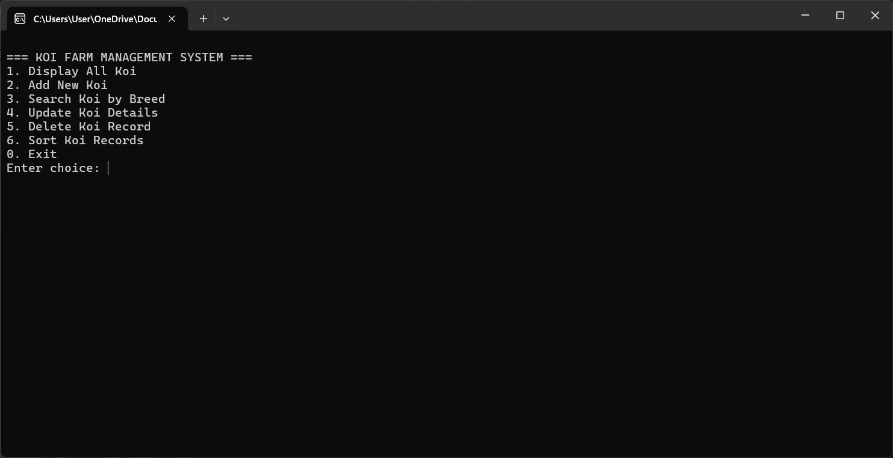

WS101 Portfolio Project
This portfolio website project highlights my foundational skills in web design, layout structuring, and content organization. It reflects both my technical learning in WS101 and my creativity in presenting information effectively online. Through this project, I was able to apply HTML, CSS and JS concepts to build a functional, well-structured, and visually appealing personal website..
Open

Koi Fish Management System
The Koi Fish Management System is a simple application designed to help koi farm owners efficiently manage their koi inventory. It allows users to record, view, update, search, and delete koi information such as ID, breed, size, age, and price. The system also includes features for adding new koi, tracking their growth, and maintaining organized records for easy monitoring. This project demonstrates basic file handling, data organization, and menu-driven programming in C.
Open